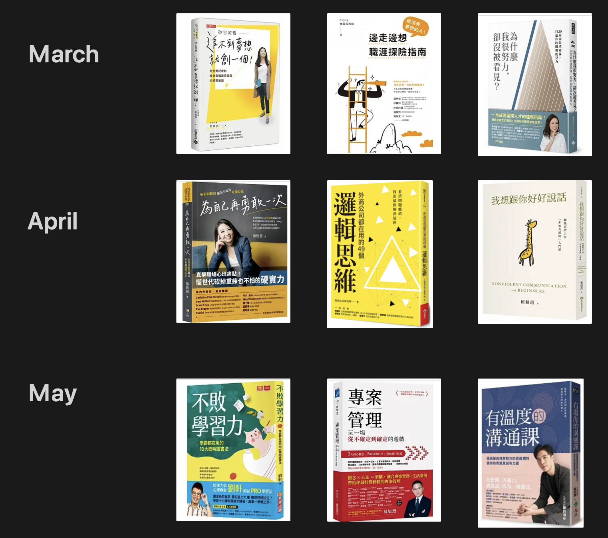

The 12 week year-重塑時間節奏Ｘ閱讀習慣

一年只有12週？! 一週一書，週週成長
✔ 你也是每年制定許多計畫，卻把計畫變成願望？
✔ 你也是待辦清單永遠列不完，待辦清單變成壓力清單？
✔ 你也是擁有許多書，進度卻不如數量多？
<<<<<<< HEAD用12週，重新思考閱讀與時間，探索閱讀與生活的美妙連結
身為擁有蓋洛普天賦(Gallup CliftonStrengths) Top1學習＋Top3蒐集的我，對於知識的探索與收集就像是呼吸一般自然、好奇心就是最棒的老師，然而，在學習的管道多不勝數的情況下，從線上課程、社交媒體、YouTube，到網路文章和書籍閱讀，該如何在眾多選擇和繁忙的日程中仍舊保持閱讀習慣呢？
3個月前的我總是很好奇，為什麼一天同樣只有24小時，有些人卻可以把一天當二天用？ 或許每個人可支配的時間都不同，但他們又是如何達到這樣的高效率呢？這些問題，直到我接觸了The 12 week year超高效時間管理：用12周完成12月的工作一書才終於有了些答案。
什麼！The 12 week year不是在講時間管理？還能重塑閱讀習慣？制定『12週年計畫』，需要確定每個目標的時間框架、把目標拆解為一個個關鍵行動、在這12週內全心投入，並固定覆盤，覆盤正是12週年計畫的關鍵，我們能夠及時檢視自己的進展和不足，進行調整和改進。同樣的方式也適用於閱讀，在閱讀一本書之前，除了明確目標外，還需要設定時間限制（例如：告訴自己現在只有12分鐘閱讀某一章節，然後專心投入），閱讀後的反思就如同覆盤能夠及時檢視所獲知識並將其融入自我。
雖然12週看似不多，但透過計畫的設定，我們能更有效地利用時間、不再把目標推給未來的自己，也不會過度樂觀地期待未來的時間。12個月也許充滿變數，但12週更易掌握。讓我們更精準地善用片段時間，不再讓閱讀沉睡在待辦清單的最底層。讓藏書成為你的知識庫吧！
一週一書 12本閱讀書摘與心得
1️⃣ 📗矽谷阿雅 追不到夢想就創一個！從台灣記者到臉書電商產品經理的顛覆筆記
面對抉擇時，我們第一個清楚知道的是失去的現在，然而未來的報酬無法計算，而未來是爭取來的。這本書不僅紀錄作者的成長故事，更詳細說明如何將人生藍圖與職涯規劃具體化，將自己視為一產品來經營，相信不論身處於哪個產業、哪個職位、哪個職涯階段，閱讀這本書都能獲得不同的啟發。
2️⃣ 📒給沒有夢想的人！邊走邊想職涯探險指南
沒有夢想的人，人生就像是一場無限遊戲，只要能持續就是勝利，當你不再把自己侷限於別人的比賽之中 又何嘗會弱於人後，每一步都是成功，不論往哪走都是向前走，既然看不到遠方，那我就看腳下，花在探索自己的時間，絕對不會是浪費。這本書並非心靈雞湯，書如其名，詳細記載職涯探險指南，如果身在職場的我們需要一本職涯說明書，這本書絕對能幫助我們走向適合自己的道路，在那裡發揮光芒。
3️⃣ 📗30堂國際溝通課，打造你的職場能見力
溝通力是能充分表達觀點，取得認同與支援以解決歧見、尋求共識的能力，溝通功力來自經常的自我檢視與策略思考，而個性只是決定人們以不同方式獲得成功，視自己的個性擷取內外向者在溝通上的優點，並巧妙運用，了解自己的優缺點，發展自己適合的溝通風格，才能讓溝通能力有效發揮。這本書不僅告訴我們在職場上如何應對進退，更重要的是提供具體的方針，引導我們如何提升職場能見力，不論身處跨國或本土企業，這本書都能成為你寶貴的工具書。
=======
3個月前的我總是很好奇，為什麼一天同樣只有24小時，有些人卻可以把一天當二天用？ 或許每個人可支配的時間都不同，但他們又是如何達到這樣的高效率呢？這些問題，直到我接觸了The 12 week year 超高效時間管理：用12周完成12月的工作一書才終於有了些答案。
作為一個知識焦慮知識學習愛好者，好像總有一種錯覺買的書越多、借的書越多，知識量就會跟著爆量，然而實際閱讀完畢的數量，卻遠不及松鼠囤積的速度，我想這就是所謂的知識松鼠症吧！面對這個可愛的時代病，有沒有什麼解方呢？有的，答案剛好與The 12 week year有關。
什麼！The 12 week year不是在講時間管理？還能解決囤積書本的問題？在閱讀一本書之前，除了確認閱讀目的，還需要保持時間意識（例如：告訴自己現在只有15分鐘可以閱讀某個章節，然後專心投入），當閱讀完畢，需要反思才能真正將知識內化，這就像制定『12週年計畫』一樣，需要確定每個目標的時間框架、把目標拆解為一個個關鍵行動、在這12週內全心投入，並固定覆盤，覆盤正是12週年計畫的關鍵，我們能夠及時檢視自己的進展和不足，進行調整和改進。
雖然12週看似很短，實際上也是3個月的時間，透過這樣的計畫，我們能夠更有效地利用時間，不再把目標推給未來的自己，對於未來擁有的時間過度樂觀，12個月難以預測，但12週絕對比12個月更好掌握，讓我們更精準地利用瑣碎時間，不再讓閱讀沉睡在待辦清單的最底層，讓藏書庫成為你的知識庫吧！
- 以下是9本閱讀書摘
1️⃣ 📗矽谷阿雅 追不到夢想就創一個！從台灣記者到臉書電商產品經理的顛覆筆記
面對抉擇時，我們第一個清楚知道的是失去的現在，然而未來的報酬無法計算，而未來是爭取來的。這本書不僅紀錄作者的成長故事，更詳細說明如何將人生藍圖與職涯規劃具體化，將自己視為一產品來經營，相信不論身處於哪個產業、哪個職位、哪個職涯階段，閱讀這本書都能獲得不同的啟發。
2️⃣ 📒給沒有夢想的人！邊走邊想職涯探險指南
沒有夢想的人，人生就像是一場無限遊戲，只要能持續就是勝利，當你不再把自己侷限於別人的比賽之中 又何嘗會弱於人後，每一步都是成功，不論往哪走都是向前走，既然看不到遠方，那我就看腳下，花在探索自己的時間，絕對不會是浪費。這本書並非心靈雞湯，書如其名，詳細記載職涯探險指南，如果身在職場的我們需要一本職涯說明書，這本書絕對能幫助我們走向適合自己的道路，在那裡發揮光芒。
3️⃣ 📗為什麼我很努力，卻沒被看見？：30堂國際溝通課，打造你的職場能見力
溝通力是能充分表達觀點，取得認同與支援以解決歧見、尋求共識的能力，溝通功力來自經常的自我檢視與策略思考，而個性只是決定人們以不同方式獲得成功，視自己的個性擷取內外向者在溝通上的優點，並巧妙運用，了解自己的優缺點，發展自己適合的溝通風格，才能讓溝通能力有效發揮。這本書不僅告訴我們在職場上如何應對進退，更重要的是提供具體的方針，引導我們如何提升職場能見力，不論身處跨國或本土企業，這本書都能成為你寶貴的工具書。
>>>>>>> 005ca75db8c83b35fa579bd92651f516246c693b我們會把不知道的事想得很難，害怕做一些看似很酷的事，但其實我們只需要當個hustler，hustler在字典上可能不是一個好字，但在滿是創業家的砂谷指的是下定決心要成功，為了目標使命必達、不怕動手做的人，作者詳列了12項帶著她在職涯中，一路闖關成功的硬實力，有了這些硬實力的加持，即使砍掉重練，都能為自己再勇敢一次，並讓「hustler」的精神成為我們職場和人生中的關鍵力量。
5️⃣ 📗外商公司都在用的49個邏輯思維: 看清問題癥結, 找出最快解決途徑
人與人之間的衝突和誤會，常常是因為思考角度的不同所造成的，利用換位思考能讓我們跳出固有思維的束縛，從宏觀的角度思考，進而獲得新的靈感，其中單向思考是分析問題和解法的因果，每個問題都要想出四個解決辦法;混淆因果是利用三段論證有效檢視，避免主觀意識帶入;而兩難困境是檢視兩難是否完全矛盾，找出第三種解決模式。這本書還提供四種思考工具，分別是PDCA、MECE、5W2H與時間管理矩陣，它們可以幫助我們更系統性地分析問題，從而做出更明智的決策。閱讀這本書對看清問題癥結, 找出解決途徑絕對會有幫助。
<<<<<<< HEAD6️⃣ 📒我想跟你好好說話：賴佩霞的六堂「非暴力溝通」入門課
當我說「我覺得你在生氣」的時候 , 並沒有說出任何關於我心裡的感受， 說出來的只是對你的評斷（例如：「我生氣 」=感受。「我感覺你在生氣 」=「我認為你在生氣 」=評斷），我們不可能替他人有感覺 , 只能感覺自己的情緒，這是我們在使用這些語句時最容易產生混滑的，而這樣的暴力語言就像豹狼，領域性、攻擊性強，凡事總要爭個輸贏，但誰對誰錯對關係的維持真的會有幫助？改變可以從現在開始，看完這本書後，試著依造非暴力溝通的四大步驟，不給予評論、只說出「觀察」，說出我的「感受」如何、直接說出「需求」，提出明確的「請求」，現在換個方式來呈現開頭那句話吧：「我看見你不說話，我覺得很無助，你可以告訴我你的想法嗎，這樣我們才能一起想辦法解決。」這個說法聽起來是不是更悅耳了呢？下次開口前可以試著問自己你想要的是玩「誰對誰錯」的遊戲，還是讓彼此開心呢？
7️⃣ 📗不敗學習力：學霸都在用的10大聰明讀書法
每天我們要做的事情太多，但如果你真的停下來思考，會發現絕大多數事情，不是那麼有必要去做，所以選出你必須要做的事，然後把它做好，做好之後，剩餘時間再去做別的，例如：唸教科書前先研究課綱，必須先弄清楚，老師最希望我們學到什麼，以及這個課程的脈絡，因為我們沒有時間、也沒辦法看完所有的東西，掌握這個脈絡，才知道如何取捨、要看什麼篇章。這本書不僅囊括學習的技巧與方法，還分享了時間管理的心法，方法與技巧固然重要，倘若沒有健康的身心靈狀態，技巧恐怕也無用武之地，讓我們一起在學習和生活中更好地成長，更有效地達成目標吧！
8️⃣ 📒專案管理：玩一場從不確定到確定的遊戲
人生就是一場專案管理，人生「確定」要活得好，但「不確定」怎麼能活得好？從小「確定」要學得好，但「不確定」怎麼能學得好？長大「確定」要工作好，但「不確定」怎麼找工作好？而這正是一場從確定到不確定的遊戲， 計畫趕不上變化，怎麼轉都沒關係，人生本來就該轉來轉去，所有的過程，只不過是階段性的任務，階段性的目標，把規律看成不確定，想要事情做得「好還要更好」的態度，就是專案的基礎，而說到專案，其中的瀑布式專案管理（最終可見）與敏捷式專案管理（最小可用）又跟我們的生活有什麼連結呢？ 有的，以室內裝潢舉例，從平面設計，到最後裝潢實現，就是「最終可見」;透過虛擬實境模擬裝潢，讓用戶身歷其境，就是「最小可用」。如果以3個月內減重5公斤舉例，執行瀑布式專案管理就是設定目標，埋頭減重，3個月後才量體重；如果每週都量體重，修正自己的飲食運動減肥方法，就是敏捷式專案管理。這本書以宏觀的角度解釋專案管理，幫助我們在專案執行與日常生活中更聰明地進行規劃和決策，即使是身處專案中的專業從業者，閱讀這本書一定也能從中找到驚喜。
9️⃣ 📗有溫度的溝通課：透過聲音理解對方的思維慣性，使你的表達真誠有力量
溝通是為了有效傳遞訊息，而不是表現自己，你有沒有過這樣的經驗？要上台演講之前，手心會冒汗、心跳會加快，或者是要婉拒朋友的邀請時，心裡會擔心拒絕之後，對方會不會討厭自己，因此變得不知所措，正因擔心說錯話，反而產生了我們不希望的結果，越想克服緊張，就越容易緊張，這時若能將焦點放在傳達訊息的目的上，而非過度關注自己的表現，我們可能會發現表達的效果更佳。而在說話時，我們的語氣和情緒也會影響聽眾對我們的理解和反應，通常我們可以意識到自己是如何使用語言的，所以如果你想要假裝，單從文字內容是不容易被察覺的，但是說話時除了內容，還會產生語氣，也就是當下的情緒，而情緒會反應一個人的狀態，讓人感受到不協調感。這本書正是幫助我們不再假裝、更真實的表達自我、更了解說話和聲音之間的連結，透過有效的說話和聲音掌控，我們都能夠更好地表達自己的想法和情感，探索更溫暖、更有效的溝通方式。
1️⃣0️⃣ 📒通往財富自由之路
=======6️⃣ 📒我想跟你好好說話：賴佩霞的六堂「非暴力溝通」入門課
當我說「我覺得你在生氣」的時候 , 並沒有說出任何關於我心裡的感受， 說出來的只是對你的評斷（例如：「我生氣 」=感受。「我感覺你在生氣 」=「我認為你在生氣 」=評斷），我們不可能替他人有感覺 , 只能感覺自己的情緒，這是我們在使用這些語句時最容易產生混滑的，而這樣的暴力語言就像豹狼，領域性、攻擊性強，凡事總要爭個輸贏，但誰對誰錯對關係的維持真的會有幫助？改變可以從現在開始，看完這本書後，試著依造非暴力溝通的四大步驟，不給予評論、只說出「觀察」，說出我的「感受」如何、直接說出「需求」，提出明確的「請求」，現在換個方式來呈現開頭那句話吧：「我看見你不說話，我覺得很無助，你可以告訴我你的想法嗎，這樣我們才能一起想辦法解決。」這個說法聽起來是不是更悅耳了呢？下次開口前可以試著問自己你想要的是玩「誰對誰錯」的遊戲，還是讓彼此開心呢？
7️⃣ 📗不敗學習力：學霸都在用的10大聰明讀書法
每天我們要做的事情太多，但如果你真的停下來思考，會發現絕大多數事情，不是那麼有必要去做，所以選出你必須要做的事，然後把它做好，做好之後，剩餘時間再去做別的，例如：唸教科書前先研究課綱，必須先弄清楚，老師最希望我們學到什麼，以及這個課程的脈絡，因為我們沒有時間、也沒辦法看完所有的東西，掌握這個脈絡，才知道如何取捨、要看什麼篇章。這本書不僅囊括學習的技巧與方法，還分享了時間管理的心法，方法與技巧固然重要，倘若沒有健康的身心靈狀態，技巧恐怕也無用武之地，讓我們一起在學習和生活中更好地成長，更有效地達成目標吧！
8️⃣ 📒專案管理：玩一場從不確定到確定的遊戲
人生就是一場專案管理，人生「確定」要活得好，但「不確定」怎麼能活得好？從小「確定」要學得好，但「不確定」怎麼能學得好？長大「確定」要工作好，但「不確定」怎麼找工作好？而這正是一場從確定到不確定的遊戲， 計畫趕不上變化，怎麼轉都沒關係，人生本來就該轉來轉去，所有的過程，只不過是階段性的任務，階段性的目標，把規律看成不確定，想要事情做得「好還要更好」的態度，就是專案的基礎，而說到專案，其中的瀑布式專案管理（最終可見）與敏捷式專案管理（最小可用）又跟我們的生活有什麼連結呢？ 有的，以室內裝潢舉例，從平面設計，到最後裝潢實現，就是「最終可見」;透過虛擬實境模擬裝潢，讓用戶身歷其境，就是「最小可用」。如果以3個月內減重5公斤舉例，執行瀑布式專案管理就是設定目標，埋頭減重，3個月後才量體重；如果每週都量體重，修正自己的飲食運動減肥方法，就是敏捷式專案管理。這本書以宏觀的角度解釋專案管理，幫助我們在專案執行與日常生活中更聰明地進行規劃和決策，即使是身處專案中的專業從業者，閱讀這本書一定也能從中找到驚喜。
9️⃣ 📗有溫度的溝通課：透過聲音理解對方的思維慣性，使你的表達真誠有力量
溝通是為了有效傳遞訊息，而不是表現自己，你有沒有過這樣的經驗？要上台演講之前，手心會冒汗、心跳會加快，或者是要婉拒朋友的邀請時，心裡會擔心拒絕之後，對方會不會討厭自己，因此變得不知所措，正因擔心說錯話，反而產生了我們不希望的結果，越想克服緊張，就越容易緊張，這時若能將焦點放在傳達訊息的目的上，而非過度關注自己的表現，我們可能會發現表達的效果更佳。而在說話時，我們的語氣和情緒也會影響聽眾對我們的理解和反應，通常我們可以意識到自己是如何使用語言的，所以如果你想要假裝，單從文字內容是不容易被察覺的，但是說話時除了內容，還會產生語氣，也就是當下的情緒，而情緒會反應一個人的狀態，讓人感受到不協調感。這本書正是幫助我們不再假裝、更真實的表達自我、更了解說話和聲音之間的連結，透過有效的說話和聲音掌控，我們都能夠更好地表達自己的想法和情感，探索更溫暖、更有效的溝通方式。
- 新12週年計畫之本月閱讀清單
 >>>>>>> 005ca75db8c83b35fa579bd92651f516246c693b
>>>>>>> 005ca75db8c83b35fa579bd92651f516246c693b
通往財富自由之路，書如其名，財富自由並非終點，而是需要持續維持的動態，任何現實的金錢，其實都是估值，真正應該關注的是價值，就如同成長與成功，成功也只是其中一個站牌，成長仍該持續，而人腦就像作業系統是可以升級的，每一次學會，其實就是一次upgrade。 這本書點出多數人的盲點，人們往往以為金錢大於一切，但其實 注意力>時間>金錢，金錢僅是估值會波動，可能因通貨膨漲而縮小，然而時間不能倒轉，注意力更是萬分珍貴。真正重要的事物往往是看不到的，而真正能掌握的其實都在我們的大腦裡。
1️⃣1️⃣ 📗好懂秒懂的商業獲利思維課：30堂翻轉財務思考框架，開店、創業、經營、工作績效有感提升
好懂秒懂的商業獲利思維課，如同書名，作者以其豐富的經驗和知識，完整涵蓋了產業、銷售、人才、發展和財務等範疇，透過深入解析和生動的案例，30堂翻轉財務思考框架與商業思維。同時，內容也涉及了勞資雙方在認知上的落差和心理效益。例如，老闆或許會認為已經向員工發放了股權，應該會帶來激勵效果，站在員工的立場可能會有不同的看法。不論是任何領域的職場人士，這都是一本值得一讀的佳作。
1️⃣2️⃣ 📒贏在邏輯思考力：玩一場擴張邊界的遊戲
什麼是邏輯？記得住，才有邏輯可言；記不住，哪來邏輯可述。記住才會拿來用；拿來用才會有用。作者透過精簡的幾句話道破邏輯的核心意義其實就是幫助大腦記憶與使用，而擴張知識邊界就是認識與吸收他人的「知道」，擴展人生維度從「不知道」開始，不斷擴張認知邊界，才能知道更多的「不知道」，邏輯思考的能力，需要持續不斷地與時俱進，就像參與一場不斷擴張的遊戲般，持續探索、學習與成長。
時間Ｘ閱讀影片推薦
☞ 有意識地運用時間，我們不是沒有時間，而是選擇了不花時間在這件事情上
☞ 3個方法提升閱讀力，延伸書籍推薦：習慣紅利：從工作管理到人生管理，從微小改變到人生蛻變